3.添加菜单和工具条¶
在第2章"与Windows一起工作"中，你建立了一个支持多个窗口、一个侧边栏和一个细节窗格的macOS应用程序。你用你在第一章中设计的数据模型将它与API连接起来。
现在是时候通过添加菜单和工具栏向真正的Mac应用程序迈出另一步了。Mac用户希望能够通过菜单来执行应用程序中的几乎所有功能，最好是用键盘快捷键。工具栏允许轻松访问更多的窗口特定控制。
你将继续你在上一章建立的应用程序，学习如何添加菜单和不同类型的菜单项，以及如何在窗口中添加工具栏
什么是菜单？¶
Menu是适用于任何显示选择的用户界面元素的术语，但菜单的实现非常依赖于平台。在适用于macOS的SwiftUI中，有三种方法可以显示菜单：
- 使用
Menu视图，它允许你在应用程序用户界面的任何地方插入一个可点击的菜单。 - 使用
contextMenu，当用户右击另一个UI元素时弹出一个菜单。 - 通过
Mac的系统范围内的菜单栏。
虽然前两个选项在Mac上看起来与iOS应用不同，但使用它们并无不同。但是第三个选项，即出现在你的Mac屏幕顶部的固定菜单栏，在iOS上是没有对应的。它包含一套标准的菜单和菜单项，几乎在所有的应用程序中都会出现，而且它们遵循用户熟悉的键盘快捷键惯例。在本章中，你将学习如何通过添加应用程序特定的菜单和菜单项为你的应用程序定制Mac菜单栏。
设置菜单命令¶
打开你上一章的项目或者下载本章的资料，然后打开starter项目。
你的应用程序已经有了一套默认的菜单，但是要改变这些菜单，你需要在OnThisDayApp.swift中的WindowGroup上添加一个commands修改器。你可以在那里插入所有的菜单代码，但如果你把它拿出来放到自己的文件中，会使代码更容易维护。
创建一个新的Swift文件--不是SwiftUI视图文件--称为Menus.swift，并将此添加到其中：
// 1
import SwiftUI
// 2
struct Menus: Commands {
var body: some Commands {
// 3
EmptyCommands()
}
}
这些都是什么？
Commands是一个SwiftUI协议，所以你需要导入SwiftUI。Menus和它的body都必须符合Commands，以便SwiftUI将它们识别为菜单和菜单项。- 因为
body必须返回一些东西，所以你使用一个预先建立的菜单集--在这种情况下，一个什么都不做的菜单集。
接下来，你需要将Menus连接到你的应用程序的WindowGroup。在OnThisDayApp.swift中，向WindowGroup添加这个修改器。
.commands {
Menus()
}
这告诉SwiftUI将你的新Menus附加到菜单栏上。当你添加到Menus时，这将自动应用新的菜单和菜单项，但OnThisDayApp.swift仍保持不乱，易于阅读。
使用预先建立的菜单组¶
添加菜单项的最简单的方法之一是包括一些苹果提供的预建菜单组。不是所有的应用程序都需要所有这些组，但这种方法允许你插入一致的菜单项组，如果它们是相关的。
你已经添加并测试了EmptyCommands，但这里是你可以包含的其他内容，你可能会发现它们稍微有用一些。:]
SidebarCommandsToolbarCommandsTextEditingCommandsTextFormattingCommandsImportFromDevicesCommands
Note
查看Xcode的CommandGroup的文档，滚动到Standard Command Groups，查看苹果是否增加了更多的内容。
这个应用程序没有任何文本编辑，也不需要从附近的iOS设备导入任何照片或扫描，所以你可以忽略这些选择。但是，它确实有一个侧边栏，并将有一个工具栏，所以前两个看起来很有用。
为什么EmptyCommands会存在？想象一下，你要根据一些条件建立一个菜单，你只希望你的菜单在某些情况下出现。由于body必须返回一些东西，你可以用它来有效地返回什么。在普通的SwiftUI视图中，你使用EmptyView来达到同样的目的。
在Menus.swift中，将EmptyCommands()替换：
SidebarCommands()
构建并运行该应用程序。
还记得在上一章中，你发现可以隐藏侧边栏，但不可能找回它吗？现在View菜单包含一个Hide/Show Sidebar的菜单项：
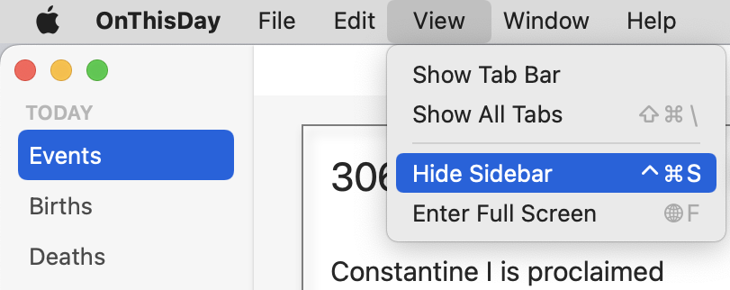
拖动垂直分隔线来隐藏侧边栏，然后使用这个菜单项来再次显示它。试试键盘上的快捷键--Control-Command-S--来切换侧边栏的输入和输出。
你还没有工具条，但为了准备，在SidebarCommands()之后的下一行添加以下内容：
ToolbarCommands()
与SwiftUI视图不同的是，你不需要用一个容器来包裹一系列的命令。
现在构建并运行，你会看到视图菜单又多了一组新项目。由于你还没有工具栏，你的应用程序已经自动禁用了它们，但它们已经准备好在你添加工具栏时使用：
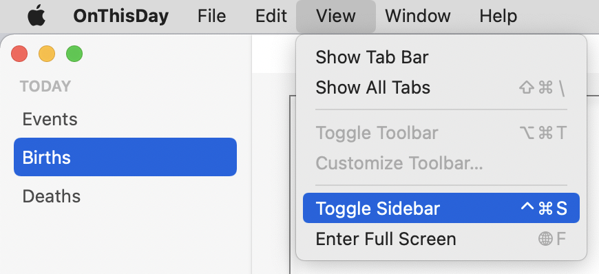
对于这些预置的命令组，系统决定把它们放在哪里，而你无法调整。但是，你不必担心将它们连接到动作上，设置键盘快捷键或将它们本地化。而且它们总是遵循苹果公司的指导方针，所以如果它们适合你的应用程序，你应该更喜欢使用这些而不是建立你自己的。
插入一个菜单项¶
现在你知道了如何应用一套预建的菜单项，现在是时候考虑在现有的菜单中加入自己的菜单项了。为此，你将在Help菜单中添加一个指向API网站的链接。
要添加菜单项，你要把它们包在一个CommandGroup中。这与预先建立的菜单命令类似；每个命令也是一个CommandGroup。
当你初始化一个CommandGroup时，你必须告诉它要把它的项目放在哪里。在Menus.swift中，在ToolbarCommands下面，输入CommandGroup(.ToolbarCommands)。在你输入了开头的小括号后，你会看到自动完成的建议，显示你的三个选项：
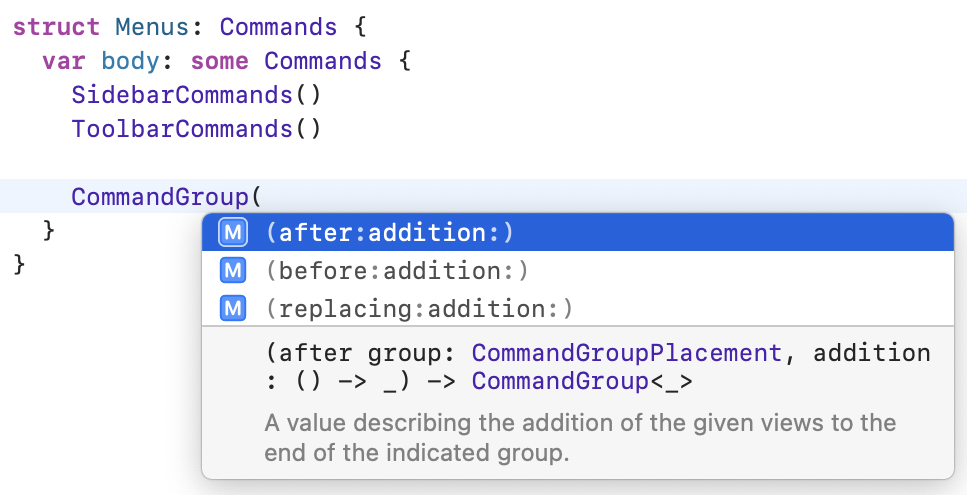
正如你所看到的，你可以把你的组after、before或replacing的东西放在CommandGroupPlacement类型的地方。如果你查阅CommandGroupPlacement的文档，你会看到一个标准菜单项的位置列表，你可以用它来定位你的新项。
由于你想把你的新项目放在帮助菜单中，把它放在help CommandGroupPlacement之前，看起来是个好办法。
将你的半成品CommandGroup行替换为：
CommandGroup(before: .help) {
}
现在你有了自己的CommandGroup，但你打算在里面放什么呢？一个SwiftUI视图! 你可以使用几种视图类型，但最常见的是Button。
把这段代码放在你的CommandGroup中：
// 1
Button("ZenQuotes.io web site") {
// 2
showAPIWebSite()
}
// 3
.keyboardShortcut("/", modifiers: .command)
踏过这些线路：
- 创建一个带有标题的
Button。 - 添加一个将调用一个方法的动作。
- 指定一个键盘快捷键。
这将导致一个错误，因为你还没有定义showAPIWebSite()，所以在body后面的Menus中插入这个方法：
func showAPIWebSite() {
// 1
let address = "https://today.zenquotes.io"
guard let url = URL(string: address) else {
fatalError("Invalid address")
}
// 2
NSWorkspace.shared.open(url)
}
其中有些内容会很熟悉，但最后一句话对你来说可能是新的：
- 尝试从
ZenQuotes.io的网站地址创建一个URL。如果失败了，这将是由于输入地址时的错误，所以在开发过程中用fatalError来捕捉它。 NSWorkspace是一个AppKit类，可以访问其他应用程序和系统服务。每个应用程序都会自动获得一个可以使用的NSWorkspace的共享实例。它的open方法将在系统的默认应用中打开一个提供的URL，用于该URL类型。在这种情况下，它将是默认的浏览器。
构建并运行应用程序，打开Help菜单，看到你的新菜单项。选择它，在浏览器中打开URL。回到你的应用程序，按Command-/，通过键盘快捷键返回到浏览器中的页面。
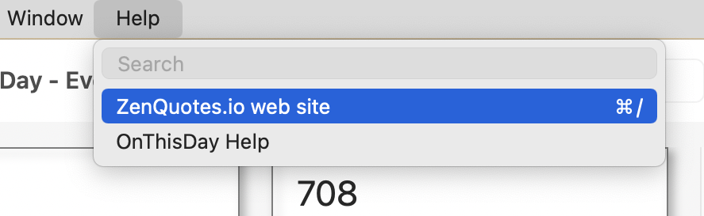
你只给这个新的CommandGroup添加了一个控件，但你可以添加多达十个。
创建一个新的菜单¶
为了插入一个菜单项，你使用了CommandGroup，但是为了添加一个全新的菜单，你将使用CommandMenu。在你的CommandMenu中，你可以为菜单项添加视图，按你喜欢的方式排列，但你不能设置你的菜单在菜单栏中的位置。
你将添加一个Display菜单，控制应用程序的外观的各个方面。在Menus.swift中，在CommandGroup后的body中添加这个：
CommandMenu("Display") {
// display menu items go here
}
构建并运行，你会看到在View和Window菜单之间有一个Display菜单，但由于它还没有菜单项，所以有点无聊。
当你在Help菜单中添加菜单项时，你使用了一个Button。这将是最常见的菜单项的视图类型，但你也可以使用其他的。其中效果特别好的是Toggle。你可能已经在其他应用程序中看到了菜单项，在它们旁边有一个复选标记，当你选择菜单项时，它就会被关闭或打开 - 在Xcode的Editor菜单中寻找一些例子。这是一个完美的Toggle的使用案例。
在你设置一个Toggle视图之前，你需要一个属性来绑定它。在这种情况下，你要添加一个设置，显示或隐藏侧边栏中每种类型事件的数量。因为你想让这个设置在应用启动之间持续存在，所以你要使用@AppStorage。
保存应用程序的设置¶
如果你已经使用过@AppStorage，那么你可以跳过这一节，但对于那些以前没有遇到过的人来说，@AppStorage是一个属性封装器，可以方便地访问UserDefaults。
在macOS和iOS中，每个应用程序都在UserDefaults中存储其内部设置。对于一个macOS应用程序来说，这就是诸如窗口大小和位置、侧边栏的可见性和宽度、工具栏的设置等等。你可以使用这个系统来存储小块的数据，如偏好，但使用UserDefaults并不容易。你必须手动读取和写入这些数据。你必须为用户没有做出任何选择时提供默认设置。而且你必须努力使显示与设置保持同步。
有了SwiftUI和@AppStorage，这就变得简单多了。你使用@AppStorage属性包装器初始化一个属性，给它一个默认值。SwiftUI将处理保存和检索它的值，每当值发生变化时，你的视图将自动更新以匹配。
你只能在@AppStorage中存储某些数据类型--Int、Bool、String、Float、Double、Data或URL，但这涵盖了许多可能性。你也可以存储枚举值，如果它们符合这些类型中的一个。
添加一个切换器¶
在Menus.swift中，在body外但在struct内，插入这个：
@AppStorage("showTotals") var showTotals = true
这一行做了大量的工作! 它声明了一个名为showTotals的布尔属性，并默认将其设置为true。它在@AppStorage属性包装器中包装了这个属性，将showTotals的UserDefaults键分配给它。
现在你有了一个属性，你可以添加你的Toggle。用这个替换// display menu items go here。
// 1
Toggle(isOn: $showTotals) {
// 2
Text("Show Totals")
}
// 3
.keyboardShortcut("t", modifiers: .command)
// more menu items go here
这个片段是做什么的？
- 插入一个
Toggle视图，其isOn值与showTotals绑定。 - 给
Toggle一个文本标签。 - 添加一个键盘快捷键
Command-T。
你可以使用大写或小写字母来设置你的快捷键。菜单将总是以大写字母显示，但你不需要按住Shift来触发它们。
SwiftUI不会让你覆盖一个标准的快捷方式。如果你试图使用像Command-C这样的东西，菜单不会显示它或对它作出反应。如果你将自己的快捷方式应用于多个菜单项，它们都会出现，但只有其中一个能用。
如果你想在你的键盘快捷方式中使用一个以上的修改器，你可以提供一个数组，像这样：
.keyboardShortcut("t", modifiers: [.command, .shift, .option])
如果你想要所有可能的修改器 - Shift-Command-Option-Control - 你可以使用.all。
构建并运行应用程序，欣赏你的新Display菜单。把它弹下来，确认切换到Show Totals：
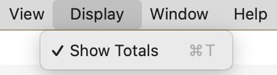
用你的鼠标指针或Command-T选择菜单项。再次检查菜单，确认Show Totals现在没有被选中。退出应用程序，重新启动它，你会看到菜单项仍然没有被选中，因为@AppStorage属性包装器保存了它。
你正在编辑和存储这个设置，但它还没有改变你的应用程序的任何部分的显示。要解决这个问题，请到SidebarView.swift中添加这些声明：
@EnvironmentObject var appState: AppState
@AppStorage("showTotals") var showTotals = true
SidebarView现在可以访问appState和showTotals。多次声明showTotals似乎是错误的，但你只是声明了一个指向用户设置中的值的链接。
有了这些，在ForEach里面的Text视图上添加这个修改器：
.badge(
showTotals
? appState.countFor(eventType: type)
: 0)
badge给列表中的行附加一个数字。如果数字被设置为零，就不会出现徽章。这段代码使用三元操作符来检查showTotals。如果是true，这将查询appState的当前事件类型的计数。如果是false，则将该数字设为0。
建立并运行应用程序。切换Show Totals菜单项，看到侧边栏的数字隐藏和显示：
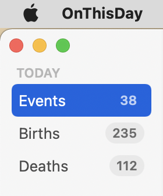
SidebarView的预览不会再工作了，因为它不能访问@EnvironmentObject。在预览中使用AppState可能会触及API的使用限制，所以现在删除SidebarView_Previews。
使用一个选取器¶
你已经在你的菜单中使用了Button和Toggle，但另一个可以作为菜单项的SwiftUI视图是Picker。就像所有的SwiftUI视图一样，系统将自定义视图的外观以适应其目的，所以菜单中的Picker不会看起来像窗口中的Picker。它将有一个菜单项，弹出一个子菜单，显示可能的选项。在子菜单中选择的选项旁边会有一个复选标记。
和iOS设备一样，Mac也支持明暗模式以及自动模式，根据一天中的不同时间在两者之间切换。如果你什么都不做，你的应用程序将与用户在System Preferences ▸ General中的选择保持一致，但给你的用户提供每个应用程序的选择也是一个好主意。
设置DisplayMode¶
在你为你的应用程序添加设置显示模式的方法之前，你需要设置一个枚举来保存这些选项，以及一个改变应用程序外观的方法。
在Models组中，创建一个新的Swift文件，名为DisplayMode.swift，并将其代码替换为以下内容：
// 1
import SwiftUI
// 2
enum DisplayMode: String, CaseIterable {
// 3
case light = "Light"
case dark = "Dark"
case auto = "Auto"
}
经历了这些：
- 导入
SwiftUI库，因为这个枚举要使用@AppStorage。 - 将枚举的
rawValue类型设置为String，并将其标记为CaseIterable，这样你就可以在这些案例中循环。 - 列出三个选项，并将原始值设置为将出现在菜单中的值。
这就建立了枚举本身，但现在你需要一种方法来改变你的应用程序的外观，这需要进入AppKit。就像iOS应用程序可以使用SwiftUI、UIKit或两者的混合，macOS应用程序可以使用SwiftUI和AppKit。
把这个方法添加到枚举中：
// 1
static func changeDisplayMode(to mode: DisplayMode) {
// 2
@AppStorage("displayMode") var displayMode = DisplayMode.auto
// 3
displayMode = mode
// 4
switch mode {
case .light:
// 5
NSApp.appearance = NSAppearance(named: .aqua)
case .dark:
NSApp.appearance = NSAppearance(named: .darkAqua)
case .auto:
// 6
NSApp.appearance = nil
}
}
这里发生了相当多的事情：
- 这是一个静态方法，所以它是一个关于枚举本身的方法，而不是关于它的任何情况。
- 使用
@AppStorage来选择值。 - 存储新的设置。
- 使用
switch来计算用户选择的模式。 NSApp是NSApplication.shared的缩写，和UIApplication.shared一样，可以访问运行中的应用程序。appearance是应用程序的属性，决定了应用程序窗口的外观。有两个主要的外观名称：aqua代表浅色模式，darkAqua代表深色模式。- 如果你把应用程序的外观设置为
nil，它就会使用你在系统偏好中选择的任何东西。
应用显示模式¶
当应用程序第一次启动时，以及每当这个设置发生变化时，你需要调用DisplayMode.changeDisplayMode(to:)来应用这个选择。由于这必须在应用程序启动时发生，把它放在OnThisDayApp.swift中是一个好主意。
首先，在OnThisDayApp的顶部添加@AppStorage定义：
@AppStorage("displayMode") var displayMode = DisplayMode.auto
接下来，将这两个修改器应用于ContentView，在其environmentObject修改器之后：
// 1
.onAppear {
DisplayMode.changeDisplayMode(to: displayMode)
}
// 2
.onChange(of: displayMode) { newValue in
DisplayMode.changeDisplayMode(to: newValue)
}
这些涵盖了所讨论的用例：
- 当应用程序首次启动时，检查存储的
displayMode设置并将其应用于应用程序。 - 每当
displayMode改变时，应用新的设置。
扩展菜单¶
最后，你把一切都设置好了，你可以把这个添加到菜单中。
在Menus.swift中，将存储的属性添加到Menus中：
@AppStorage("displayMode") var displayMode = DisplayMode.auto
接下来，把// more menu items go here替换成这样：
// 1
Divider()
// 2
Picker("Appearance", selection: $displayMode) {
// 3
ForEach(DisplayMode.allCases, id: \.self) {
// 4
Text($0.rawValue)
.tag($0)
}
}
这里有相当多的事情，但要一点一点的来：
- 使用
Divider来获得一个菜单分隔符。在这个非常短的菜单中，这其实是没有必要的，但是你需要养成将长的菜单分割成相关组的习惯。 - 添加一个带有标题的
Picker，其选择与@AppStorage属性绑定。 - 通过在
DisplayMode中循环的情况来设置挑选器的内容。 - 对于每个项目，用它的
rawValue作为标题，用它的实际值作为标签。当用户选择一个选项时，displayMode被设置为标签。
构建并运行应用程序，看看你努力工作的结果：
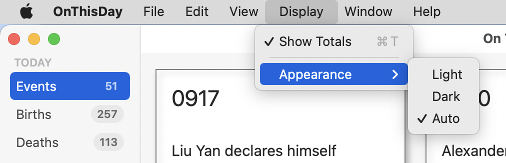
改变设置，看到你的窗口都发生了变化，与之匹配。选择一个与你平时不同的设置，退出应用程序并重新启动，以确认你的应用程序已经保存并重新应用你的选择。
其他可能性¶
你刚刚使用了一个Picker来添加一个子菜单。这样做的好处是，它为你提供了显示所选选项的复选标记。其缺点是它不允许使用键盘快捷键。那么你还能用什么呢？
一组三个按钮将允许使用键盘快捷键，但不允许使用复选标记。你可以把每个选项设置成这样：
Button("Light") {
displayMode = .light
}
.keyboardShortcut("L", modifiers: .command)
默认情况下，这些会出现在主Display菜单中，但你可以像这样将项目分组到一个子菜单中：
Menu("Appearance") {
Button("Light") {
displayMode = .light
}
.keyboardShortcut("L", modifiers: .command)
// other buttons here
}
你可以在final和challenge项目文件夹中的Menus.swift中看到一个被注释出来的实现样本。
这些选项没有一个是错的；这取决于应用程序和菜单项。在这种情况下，很容易将自动显示模式与任何在这个时间段有效的模式混淆，所以复选标记比键盘快捷键更有价值。但你现在有了知识，可以应用你的应用程序需要的任何类型的菜单和菜单项。
添加一个工具条¶
到目前为止，在本章中，你已经专注于菜单栏并添加了应用程序范围内的控件。对于窗口级别的用户界面元素，macOS应用程序使用一个工具栏，所以添加它是你的下一个任务。
如果你熟悉iOS应用程序中的工具栏，你会发现它们在macOS应用程序中的设置基本相同，但它们在后者中更常见。macOS总是把工具栏放在窗口的顶部，你会看到一些不同的选项来定位工具栏项目。
你将你的菜单应用于主应用程序WindowGroup，但你将把工具栏附加到一个窗口的视图。在ContentView.swift中，在navigationTitle修改器后添加这个：
.toolbar {
// toolbar items go here
}
这就把ContentView设定为有一个工具栏，但里面还没有任何东西。就像你对菜单所做的那样，你要添加一个新的文件来保存工具栏的内容。就像你对视图所做的那样，你要在项目导航器中建立一个新的组来容纳这种文件。
在项目导航器中选择Menus.swift，右击并选择New Group from Selection。将新组称为Controls，然后在该组中添加一个新的Swift文件，将其命名为Toolbar.swift。
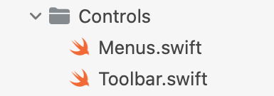
将你的新文件的内容替换为：
// 1
import SwiftUI
// 2
struct Toolbar: ToolbarContent {
var body: some ToolbarContent {
// 3
ToolbarItem(placement: .navigation) {
// 4
Button {
// button action
} label: {
// 5
Image(systemName: "sidebar.left")
}
// 6
.help("Toggle Sidebar")
}
}
}
这怎么能成为一个工具条呢？
- 导入SwiftUI库以支持工具条。
- 将
Toolbar和body符合ToolbarContent的要求，以便将它们标记为可用于工具条。 - 添加一个
ToolbarItem，把它放在navigation位置。 - 在
ToolbarItem中创建一个按钮。 - 使用一个
SF符号作为按钮的图标。 - 给按钮添加一个工具提示和可访问性描述。
为了使这个内容出现，回到你在ContentView.swift中给ContentView添加toolbar修改器的地方，将注释替换为：
Toolbar()
构建并运行该应用程序，这样你就可以欣赏到你的新工具栏，尽管它还没有做任何事情：
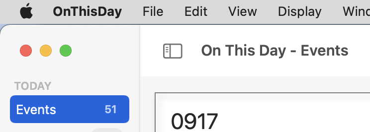
查看View菜单。现在Toggle Toolbar项目已经启用并发挥作用。
当向工具栏添加项目时，你可以使用ToolbarItem或ToolbarItemGroup。正如你所期望的那样，ToolbarItemGroup适用于你想添加一组相关的控件的情况。你添加的大多数控件都是按钮，但你也可以使用选取器、滑块、切换器、菜单，甚至文本字段。
定位一个项目使用ToolbarItemPlacement。这些在不同的操作系统中有所不同，但这里是你在Mac应用程序中可能使用的主要控件：
navigation将项目放在前缘，在窗口标题之前。principal显示项目在窗口的中心位置。primaryAction把项目推到尾部边缘。automatic让系统找出最佳位置。
现在你的工具栏上有了一个按钮，你要添加一个动作。你可能已经猜到了，这将提供第二个机制来处理侧边栏的问题。
在Toolbar.swift中给Toolbar添加这个方法。
func toggleSidebar() {
// 1
NSApp.keyWindow?
// 2
.contentViewController?
// 3
.tryToPerform(
// 4
#selector(NSSplitViewController.toggleSidebar(_:)),
with: nil)
}
这看起来很奇怪! 它在做什么？SwiftUI没有处理侧边栏的方法，所以你需要再次使用AppKit。
NSApp.keyWindow获得应用程序中最前面的窗口。- 如果成功，
contentViewController获得该窗口中内容的视图控制器。 - 一旦你有了视图控制器，你就可以试着调用它的方法。
SwiftUI的NavigationView基本上是AppKit的NSSplitViewController，该控制器有一个方法来切换侧边栏。
所以这并不是一个漂亮的方法，但它展示了SwiftUI是如何在AppKit的基础上进行覆盖的，如果你需要的话，你可以深入到AppKit中。
在body中，将按钮的动作设置为：
toggleSidebar()
现在你可以建立和运行应用程序，并使用这个工具条按钮来切换侧边栏：
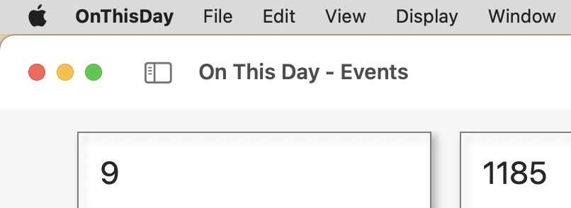
搜索网格¶
你已经在工具栏上手动添加了一个项目，在下一章你会添加更多的项目，但还有一个工具栏的功能，SwiftUI可以自动添加。如果能够搜索事件并只显示网格中的卡片子集，不是很有用吗？
在macOS 12和iOS 15中，向SwiftUI视图添加搜索功能已经变得更加容易。
在ContentView.swift中，添加这个属性来保存用户在搜索栏中输入的任何文本：
@State private var searchText = ""
接下来，在NavigationView的toolbar修改器之后添加一个searchable修改器。这个修改器的text被绑定到你刚刚创建的属性：
.searchable(text: $searchText)
最后，把events的计算属性换成这个，把搜索字符串传给appState：
var events: [Event] {
appState.dataFor(eventType: eventType, searchText: searchText)
}
这就是你需要做的所有事情! searchable修改器为工具栏添加了一个搜索文本字段，与你的searchText属性绑定。如果appState.dataFor()在其可选的searchText参数中得到一个字符串，它就会使用它来限制返回的事件。如果你的应用程序还没有工具条，这将为你添加一个。
构建并运行应用程序，在新的搜索栏中输入一些内容：
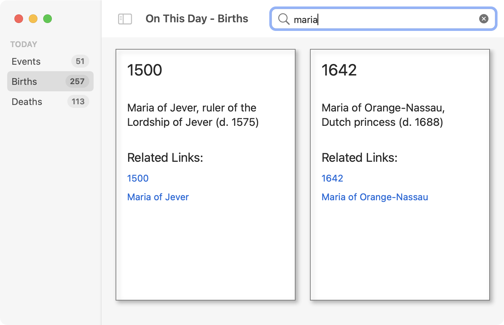
打开第二个窗口，搜索不同的东西。改变事件类型，搜索将自动适用于新的事件集。
使你的工具栏可定制¶
你可能已经注意到，View菜单中有一个叫做Customize Toolbar…的项目，但它并没有被激活。你将学习如何激活它，但现在，SwiftUI中存在一个错误，如果你在工具栏中放入一个搜索栏，你对工具栏项目所做的任何编辑都不会坚持。希望在你读这本书的时候，苹果已经修复了这个bug，如果没有，请把这个信息存档，供以后参考。
为了使工具栏可编辑，工具栏本身和每个ToolbarItem必须有一个id属性。
在ContentView.swift中，用这个替换工具栏的修改器，忽略它将导致的错误：
.toolbar(id: "mainToolbar") {
Toolbar()
}
接下来，打开Toolbar.swift并将现有的ToolbarItem替换为：
// 1
ToolbarItem(
id: "toggleSidebar",
placement: .navigation,
showsByDefault: true
) {
// 2
Button {
toggleSidebar()
} label: {
// 3
Label("Toggle Sidebar", systemImage: "sidebar.left")
}
.help("Toggle Sidebar")
}
有什么变化？
- 为
ToolbarItem定义一个id，并将其设置为默认显示。位置和以前一样。 - 包括相同的
Button与相同的动作和工具提示。 - 不使用
Image，而使用Label，因为工具栏的自定义之一是决定是否显示图标、名称或两者。
还要做一个改变：Toolbar和它的body符合ToolbarContent，但现在你需要把它改为CustomizableToolbarContent。编辑结构，使其像这样开始：
struct Toolbar: CustomizableToolbarContent {
var body: some CustomizableToolbarContent {
这修正了ContentView.swift中的错误。建立并运行应用程序，从View菜单中选择Customize Toolbar…，或在工具栏上点击右键，尝试做一些改变：
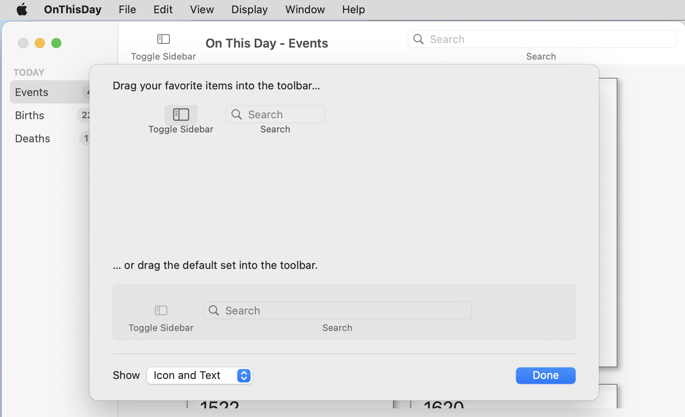
你可以使用工作表底部的弹出菜单来改变这些项目是否显示其图标、文本或两者。你可以把默认项目拖到工具栏中。如果你把任何一个项目从工具栏中拖出来删除，它就会在一团烟雾中消失，但只要你点击Done，它就会直接弹回原位。
为了确认这是一个由searchable引起的错误，注释掉ContentView.swift中的searchable修改器，再试一次。这一次，你将能够移除Toggle Sidebar工具条项目。完成后别忘了取消对searchable的注释。
你仍然无法调整它的位置，因为你专门将其设置为navigation，但如果你有一个以上的项目，并且你使用automatic放置，你就可以将它们调换过来。
最后一点。为了使工具栏可以自定义，其中的每个项目都必须有一个id。你可以定义一个有id的ToolbarItem，但不能定义ToolbarItemGroup，所以如果你想获得这种灵活性，你就必须坚持使用ToolbarItem。
挑战¶
挑战1：显示所显示事件的数量¶
侧边栏的徽章显示了每个类别的事件数量，但当你进行搜索时，网格显示的事件可能更少。在GridView的底部添加一个Text视图，显示显示的事件数量。
挑战2：切换这个计数器¶
一旦你有这个计数器显示，使用showTotals的存储设置来切换其显示。
试着自己做这些，但如果你被卡住了，请查看challenge文件夹。
关键点¶
- 在一个
macOS应用程序中，你应该通过菜单提供所有重要的功能，并在适当的地方使用键盘快捷键。 - 每个
Mac应用程序都可以访问主菜单栏。你可以添加预设的菜单组、单个菜单项或完整的菜单。 - 大多数菜单项都是按钮，但切换器和选取器也可以作为菜单项。
@AppStorage为你提供了一种方法来存储你的应用程序的设置，这些设置将在应用程序启动时持续存在。- 工具栏提供了一种更加针对窗口的添加控件的方式。它们可以被设置为允许用户自定义。
SwiftUI提供了一个searchable修改器，以在你的应用程序中添加一个搜索栏。你需要提供搜索机制，但SwiftUI提供用户界面。
接下来去哪？¶
现在你有了一个带有数据、窗口、菜单和工具栏的应用程序。你现在对Mac的菜单有了更多的了解，也知道了工具栏在Mac应用程序中是如何工作的。而且你甚至可以搜索你的数据
苹果的人机界面指南对AppKit开发者来说更有意义，因为SwiftUI删除了很多选择，默认情况下做的是正确的事情。但如果你想了解更多信息，这些章节都与本章有关：
在下一章中，你将获得以不同的格式显示数据，以及扩展应用程序以获得选定日期的事件，而不仅仅是今天。